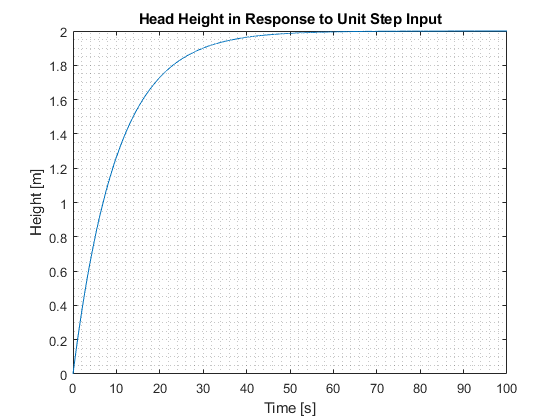
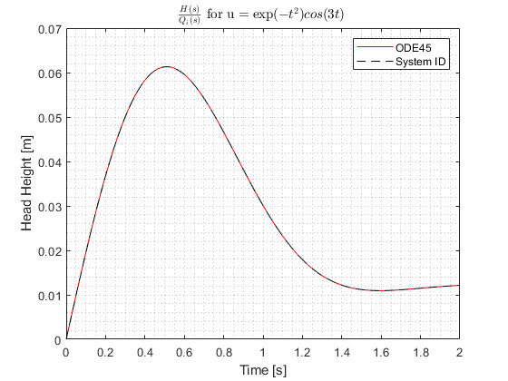
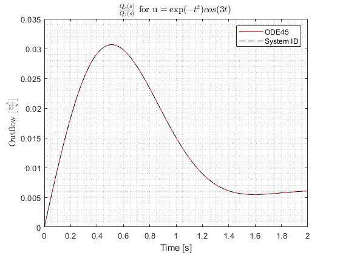

Contents
Gabriel Colangelo MAE543 Virtual Lab1 - Liquid Level Systems
clear
close all
clc
Part B
tvec = (0:.01:100)';
u = ones(length(tvec),1);
[t,height] = ode45(@tank_control,tvec,[0],[],u,tvec,'height');
figure
plot(t,height)
xlabel('Time [s]')
ylabel('Height [m]')
grid minor
title('Head Height in Response to Unit Step Input')
R = height(end);
ind_tau = find(height >= 0.632*height(end),1);
tau = t(ind_tau);
C = tau/R;
s = tf('s');
sys = R/(R*C*s + 1);
opt = stepDataOptions;
opt.StepAmplitude = 1;
y1 = step(sys, tvec, opt);

Part C
t = (0:.01:2)';
u = exp(-t.^2).*cos(3.*t);
[Th,height] = ode45(@tank_control,t,[0],[],u,t,'height');
[Tq,flow] = ode45(@tank_control,t,[0],[],u,t,'flow');
H_Qi = R/(R*C*s + 1);
Qo_Qi = 1/(R*C*s + 1);
[yh, th] = lsim(H_Qi,u,t);
[yq, tq] = lsim(Qo_Qi,u,t);
figure
plot(Th,height,'-r',th,yh,'--k')
xlabel('Time [s]')
ylabel('Head Height [m]')
grid minor
legend('ODE45','System ID')
title('$\frac{H(s)}{Q_i(s)}$ for u $= \exp(-t^2)cos(3t)$ ','interpreter','latex')
figure
plot(Tq,flow,'-r',tq,yq,'--k')
xlabel('Time [s]')
ylabel('Outflow [$\frac{m^3}{s}$]','interpreter','latex')
grid minor
legend('ODE45','System ID')
title('$\frac{Q_o(s)}{Q_i(s)}$ for u $= \exp(-t^2)cos(3t)$ ','interpreter','latex')
 